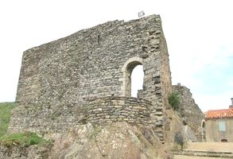
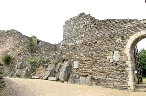
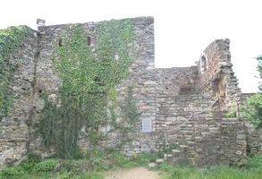
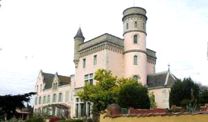
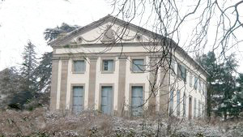
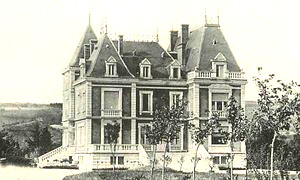
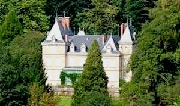
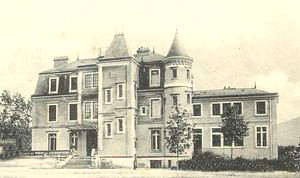

Recensement Jean-Claude Truffet
| Département | 81 — Tarn |
| Canton | Mazamet |
| Commune | Mazamet |
| Type d'édifice | Vestiges |
| Période d'origine | XI-XIX |








Sept châteaux à Mazamet dont celui de Mazamet , les vestiges de Hautpoul, château de Lagoutine, de Lapeyrouse, de Thoré et des Durand viticulteur. HAUTPOUL, en été l'office de tourisme organise des visites nocturnes avec des flambeaux du village perché médiéval. Berceau historique des Mazamet, le château primitif dHautpoul serait dorigine Wisigothique et ce serait Ataulf , le premier roi Wisigoth qui aurait crée la forteresse dHautpoul en 413. Mais , on connaît mieux Pierre-Raymond comme fondateur dHautpoul. Il a fait reconstruire le château et améliorer les défenses de la cité Saint-Pierre dHautpoul. Ainsi Hautpoul est cité dès 1084. Mais cest lors de la croisade contre les albigeois, que Simon de Montfort attaquera en avril 1212 la forteresse dHautpoul défendue par Izarn, son seigneur. La cité prise dassaut, il fera démanteler le château et lincendiera. On reparlera encore de ce château lors des guerres de religion, ce qui suppose quil a été restauré. En effet, en 1560, la réforme sinstallera dans la région et Mazamet sera placé sous lautorité dun catholique Sabastien dHautpoul. Les protestants libéreront la ville et le gouverneur se réfugiera dans la forteresse dHautpoul. En 1574, les protestants reprendront le château. Les frères Rozet seront nommés administrateurs , Jacques pour Mazamet et Robert pour Hautpoul. Mars 1589 verra les catholiques redevenir les maîtres temporairement dHautpoul avant den être chassés par les protestants courant mai. La période médiévale terminée, le château tombera en abandon. Il faudra attendre les années 1993-2000 pour que la commune de Mazamet achète et réhabilite les vestiges du château. Pas d'information historique pour les autres châteaux . THORE Demeure construite pour l'industriel par l'architecte J. Pheulpin, en 1893-1894, inspirée du modèle proposé par Viollet-le-Duc dans son histoire d'une maison, éditée en 1873. LAGOUTINE, construit dans les années 1810 pour Auguste Joseph Marie Bosviel de Lagoutine de Lapeyrouse (1774-1823). Au début du Xxe siècle, Henri, Henri Jamme de Lagoutine, vendit les terrains, Cette famille de négociants qui compte plusieurs maires de Mazamet avait été anoblie au début du XVIIIe siècle.
Mazamet, ancien castrum du XIe siècle et refuge cathare, vestiges des châteaux et des fortifications, artisanat du bois et du jouet, panorama et points de vue exceptionnel. Hautpoul, forteresse dHautpoul en 413 reconstruction du château en 1084, démantelé et incendié en 1212, puis restauré, reprit en 1574 et tombera en abandon. Lagoutine, au milieu d'un parc qu'une végétation sauvage a envahi. Car c'est une évidence, ce magnifique ensemble architectural est aujourd'hui à l'abandon. Le parc n'est pas entretenu depuis longtemps mais surtout le bâtiment a été squatté, vandalisé et dégradé. Cette situation posait d'incontestables problèmes de sécurité et d'insalubrité. La mairie de Mazamet a donc fait murer les accès du bâtiment pour éviter une occupation sauvage et empêcher d'autres dégradations. Ce bâtiment est une copropriété. Mais l'un des copropriétaires est désormais injoignable et rien ne peut se faire sans son accord. Lapeyrouse manoir du XIXe siècle à deux niveaux sur soubassements et lucarnes sur des toits impériaux, les corps de logis en forme de T accolé d'un pavillon carré Thoré Le château offre un confort rare en son temps . Le décor porté d'origine a été conservé. Lagoutine, cette construction, qui sélève devant vous, est luvre du Comte de Milhau qui fut également larchitecte des châteaux de Saint-Amans Valtoret et de Sauveterre construit dans les années 1810 sur un immense domaine à la sortie de la ville. Le domaine a été progressivement loti dans les années 1910-1930 au moment où la ville connaissait une grande phase de prospérité avec le développement de l'industrie du délainage. Sur les parcelles loties ont été édifiées d'importantes maisons pour les industriels de la place ainsi que le jardin public et la gare.
Les frères Rozet Famille d'Armand Puech Famille d'Auguste Joseph Marie Bosviel de Lagoutine de Lapeyrouse
"
Les vestiges de Hautpoul, le château de Durand, de Lagoutine, de Lapérouse et de Thoré à Mazamet.